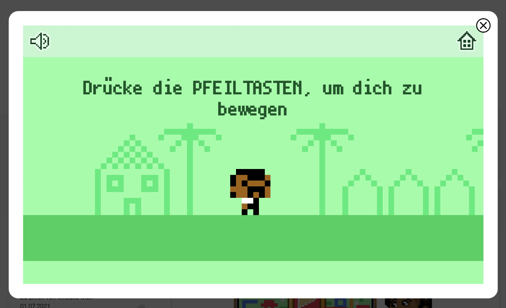
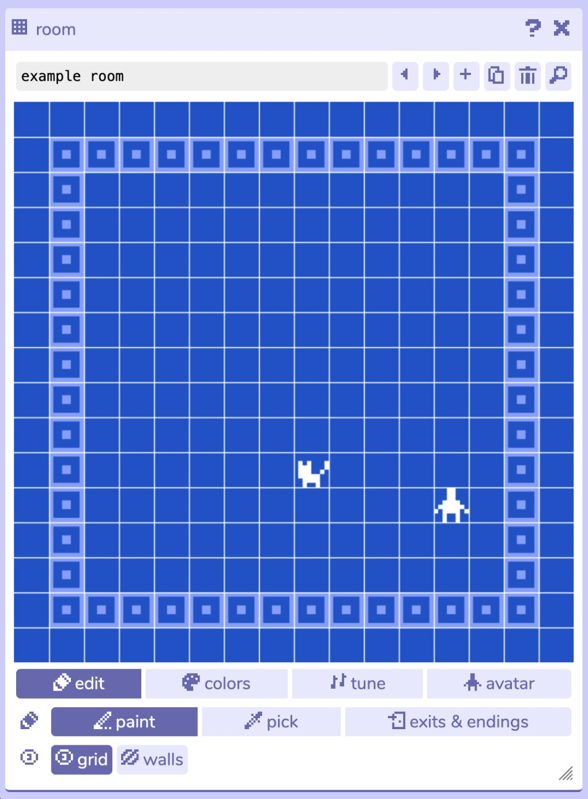
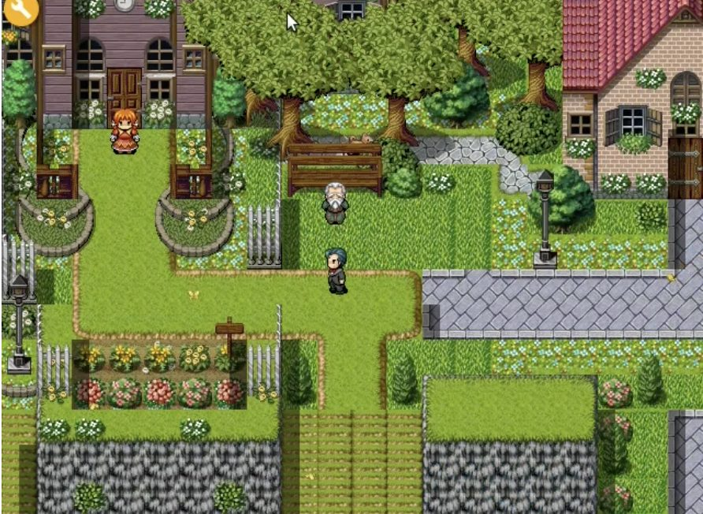
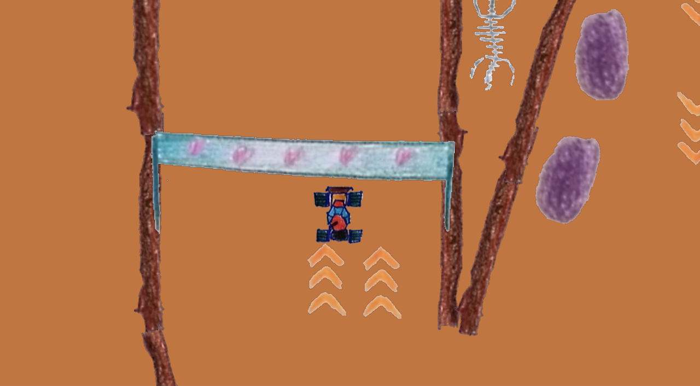
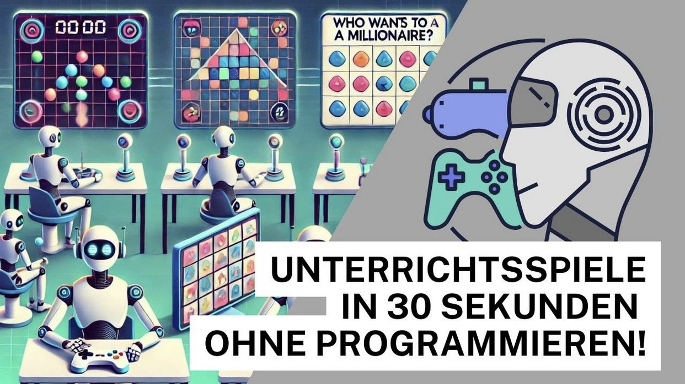
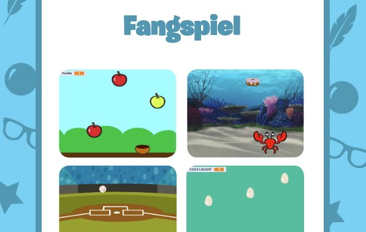
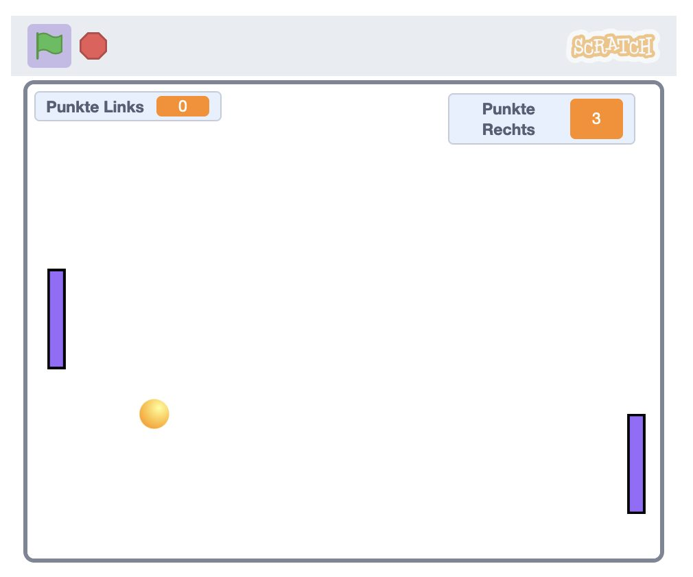

Hier findest du Ideen, wie mit dem aktiven Erstellen von Games gelernt werden kann.
Level 1: Einfach zugängliche Game Design-Plattformen
Game Design mit Jerry Lawson's Birthday

Einfach zugänglich, spielerisch.
Entwickle deine eigenen Mini-Games mit dem Werkzueug von Google Doodle.
Bitsy
(externer Link)

Reduzierte Entwicklungsumbegung mit einigen Elementen der Spielentwicklung: Portale, Sprites usw.
RPG Playground
(externer Link)

Eigene 2D-Welten erschaffen. Fokus auf Storytelling und Welterschaffung
Cand.li
(externer Link)

Einfacher Zugang zum Zeichnen und Programmieren von eigenen Spielen. Optimiert für Tablets.
Entwicklung von Spielen mit generativer KI

Spiele via Prompts entwickeln.
Level 2: Erste Spiele entwickeln/nachprogrammieren
Das Fangspiel in Scratch enwickeln

Lerne, wie man ein Fangspiel in Scratch programmiert.

Lerne, wie man den Spiele-Klassiker «Pong» in Scratch erstellt.
Level 3: Eigene Spiele umsetzen
(Paper)Prototyping wird verwendet, um Ideen für eigene Spiele zu entwickeln und zu konkretisieren.
Level 4: Erweitertes Game Design
Game Design mit Game Maker
Beispiele von Games aus Kursen mit Studierenden und Lehrpersonen: edutools.ch/games
Ausblick
Unity
Unreal